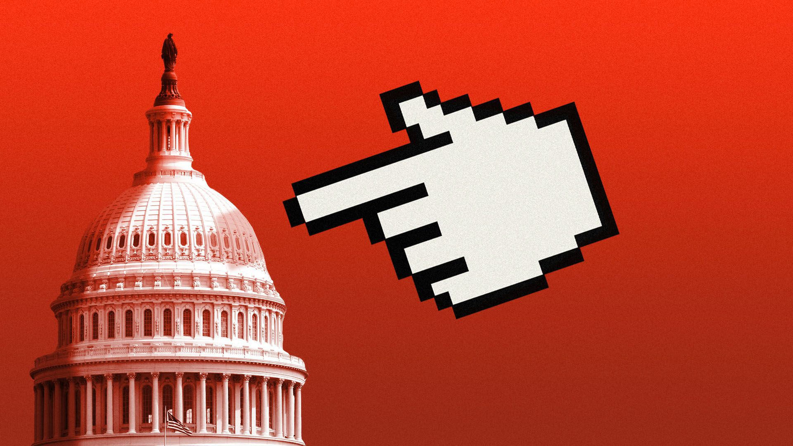

Ranking the 5 big suits against Google and Facebook
Facebook stands to lose the most, but Google is more likely to lose: That's the consensus of experts Axios asked to rank the threats the two tech giants face as five separate major antitrust lawsuits bear down on them.
Why it matters: A loss for Facebook or Google in any of the cases could force deep changes in how Silicon Valley does business — and even lead to a court-ordered breakup.
Here's your crib sheet for the cases.
DOJ vs.Google: The Justice Department, which went first in October, says Google sealed its dominance in online search in part using exclusive contracts to lock in its position as the default on browsers and mobile devices.
Texas vs.Google: A Texas-led group of state attorneys general says Google has manipulated its ad technology to disfavor competing online ad exchanges — and secretly colluded with Facebook to make that happen.
Colorado et al.vs.Google: A Colorado- and Nebraska- led group of AGs, whose suit landed Thursday, says Google steers users to its own offerings and away from specialized search providers like Yelp and TripAdvisor — and is already porting a pattern of crushing competition into voice search and other rising tech.
FTC vs.Facebook: In November, The Federal Trade Commission charged that Facebook acquired Instagram and WhatsApp to smother nascent competitors.FTC also charges that Facebook blocked competitors from using code that would link their services to Facebook's vast user base.
States vs.Facebook: A New York-led AG coalition targets Facebook's Instagram and WhatsApp deals as well, and says the damage Facebook has done to competition has stopped rival services from flourishing that would better protect people's privacy.
The big picture: These cases share a central idea: Google and Facebook have made the world worse by stifling competition, and less competition has meant less consumer choice, less privacy for Americans, less revenue for online publishers, less innovation for users.
The catch: If either company loses just one of these cases, it could face anything from a slap-on-the-wrist fine to stringent new rules of conduct to a massive 'structural remedy' like a breakup.But before any of that happened after likely lengthy trials, there'd be one or more rounds of appeals.We're talking years in court before anyone has to do anything.
What they're saying about...
The bottom line: Several antitrust experts told Axios that it will be hard to prove that Facebook's years-old acquisitions should have been barred.Proving that Google is taking ongoing action that hurts competition is probably easier.
Posted On: 2020-12-18T00:00:00
Posted By: Margaret Harding McGill


Content Date: 2020-12-18
Download Date: 2021-05-15
Document ID: L0C04CEQN